Introduction to Mapping Alaska Press Club
CartoDB Workshop – Alaska Press Club
### Andy Eschbacher, Map Scientist, CartoDB ### January 8, 2015
Find this document here: http://bit.ly/alaskaCartoDB
Outline
- Introduction to CartoDB (30 minutes) – 1:00 - 1:30 p.m.
- Brief history
- Broad range of use cases
- Intro to the interface
- Hands-on mapping workshop (45 minutes) – 1:30 - 2:15 p.m.
- Setting up accounts
- Data import
- Choropleth, Category, Intensity Maps
- Basic map styling
- Column data types
- Torque – temporal maps
- Sharing visualizations
- Break! (10 minutes) – 2:15 - 2:25 p.m.
- Working with Data (35 minutes) – 2:25 - 3:00 p.m.
- Data is messy
- What is geospatial data?
- Data representation in CartoDB (SQL schema)
- Geocoding
- SQL/PostGIS
- Joining tables
- Break! (10 minutes) – 3:00 - 3:10 p.m.
- CartoDB with JavaScript briefly (15 minutes) – 3:10 - 3:25 p.m.
- What it looks like (HTML/CSS/JS)
- Extensibility
- Epic examples
- Odyssey.js (30 minutes) – 3:25 - 3:55 p.m.
- Brief Intro on authoring narratives with maps
- Hands-on
- Wrap Up (5 minutes) – 3:55 - 4:00 p.m.
- Resources
- Seeking help
Goals for today
- Quickly and easily make meaningful maps from data in minutes
- Show the breadth of data analysis available to you through CartoDB
- Prepare data for use in mapping
Later reference
You can find this document in my GitHub Account.
1. Intro to CartoDB (30 mins) – 1 pm - 1:30 pm
### 1.1 History I’ll show you some slides
1.2a Use cases
1.2b Journalistic Use Cases
1.3 Tour of the interface
### Data Import
Basic Data Import
 Most major formats for storing data: Excel Spreadsheets, CSV files, Shapefiles, KML (Google Earth), etc. See complete list here.
Most major formats for storing data: Excel Spreadsheets, CSV files, Shapefiles, KML (Google Earth), etc. See complete list here.
- Import by URL! Super handy when in a workshop and you don’t want to overwhelm the bandwidth
- Select file from your HD
- Common Data contains useful datasets for everyday use (admin regions, USGS earthquake data, ports and their locations, and many more)
Integration with Google Drive and Dropbox.
Twitter firehose access for Enterprise accounts. <iframe src="https://srogers.cartodb.com/viz/337d9194-6458-11e3-85b5-e5e70547d141/embed_map" width="600px" height="400px"></iframe>
Data tables in CartoDB
Schema or column names 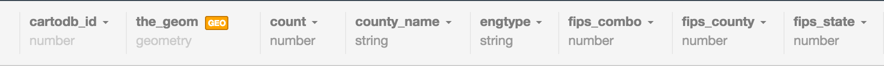
Filters & SQL 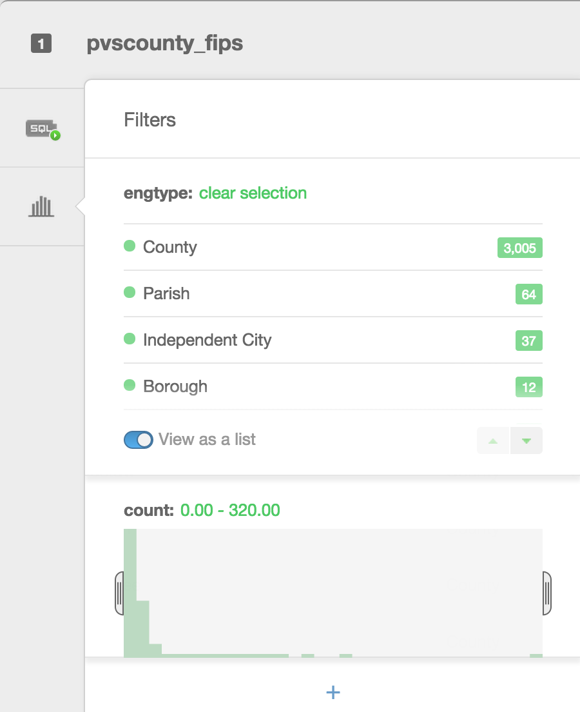 Filters are a great way to explore your data. Besides filtering your data, they allow you to see histograms of the distributions, the number of unique entries, or a search box for columns that have a large number of text entries.
Types of visualizations
- Simple – most basic visualization
- Cluster – counts number of points within a certain binned region
- Choropleth – makes a histogram of your data and gives bins different colors depending on the color ramp chosen
- Category – color data based on unique category (works best for a handful of unique types)
- Bubble – size markers based on column values
- Intensity – colors by density
- Density – data aggregated by number of points within a hexagon
- Torque – temporal visualization of data
Check out visualization documentation for more.
Simple Map
The visualization style simple is the default visualization for all maps. 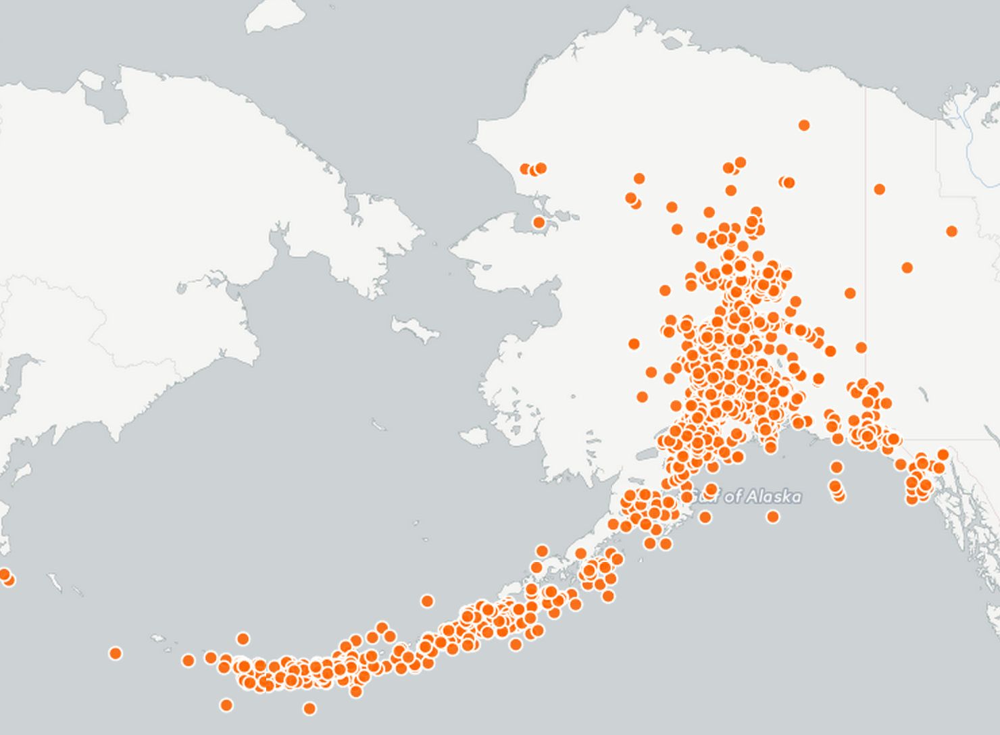
Styles available in the wizard 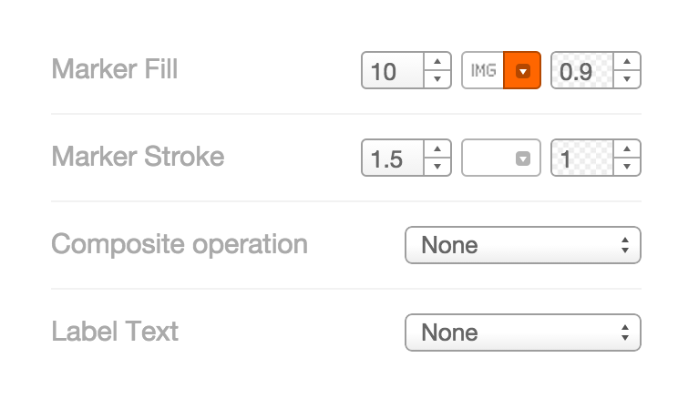
Marker Fill: change the size, color, and opacity of all markers Marker Stroke: change the width, color, and opacity of every marker’s border Composite Operation: change the color of markers when they overlap Label Text: Text appearing by a marker (can be from columns)
Infowindows/hovers
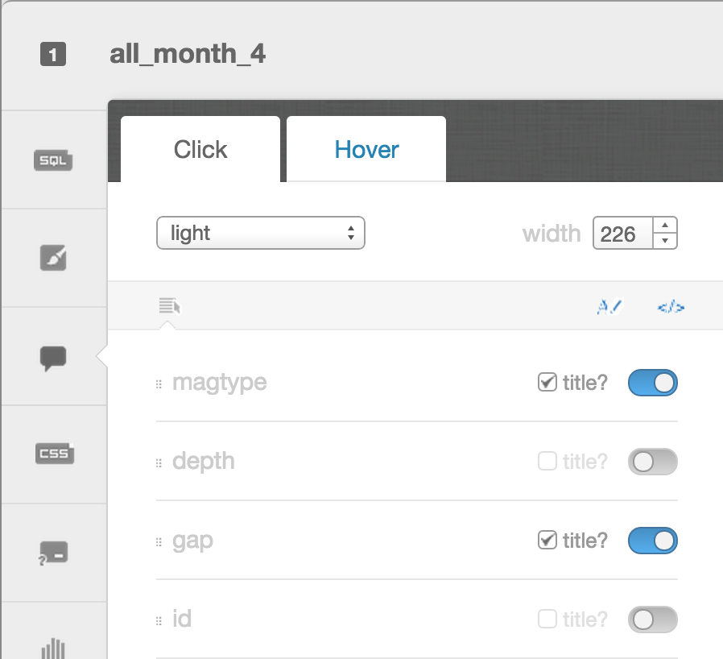
- Select which column data appear in infowindow by toggling column on
- Customize further by selecting
Change basemap
Select basemaps from different providers, use custom color, NASA data, MapBox tiles, etc. 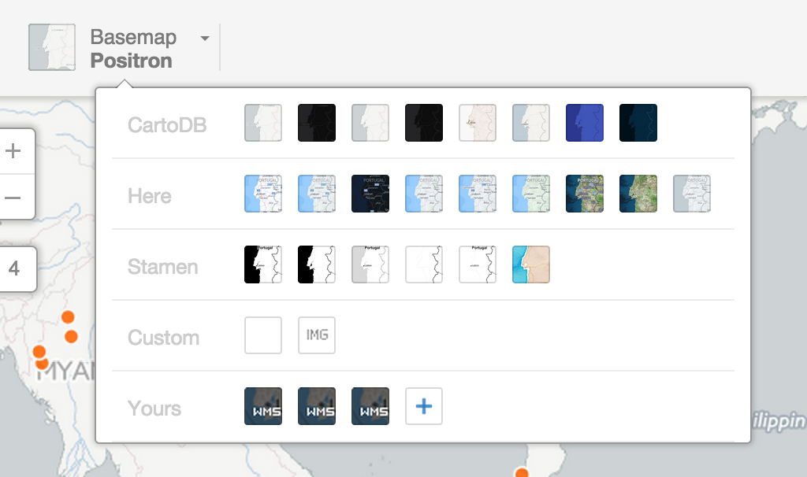
Choropleth
Choropleth maps show map elements colored according to where a value associated with the map element falls in a range. It’s like a histogram where each bin is colored differently according to a color scale you pick. Notice the CartoCSS screenshot above.
Quantification is an option to pay attention to since it controls how the data is binned into different colors. Equal interval gives bins of equal size across the range, which means that outliers stand out. Quantile bins so that each quantile has approximately the same number of values.
CartoCSS basics
CartoCSS is the styling language for our maps. ice presentation
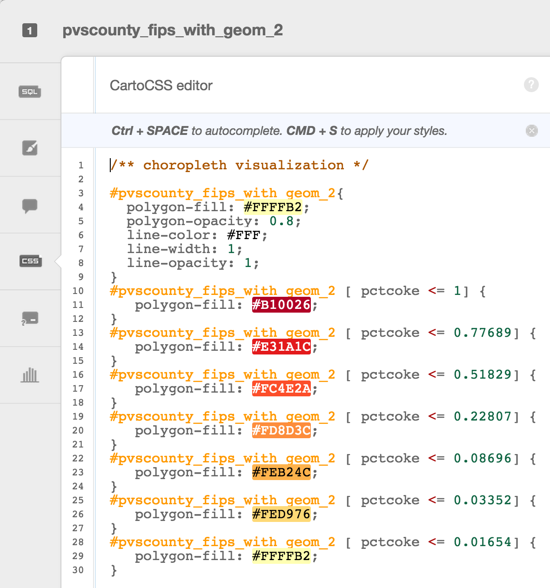
Legends
Can be easily customized 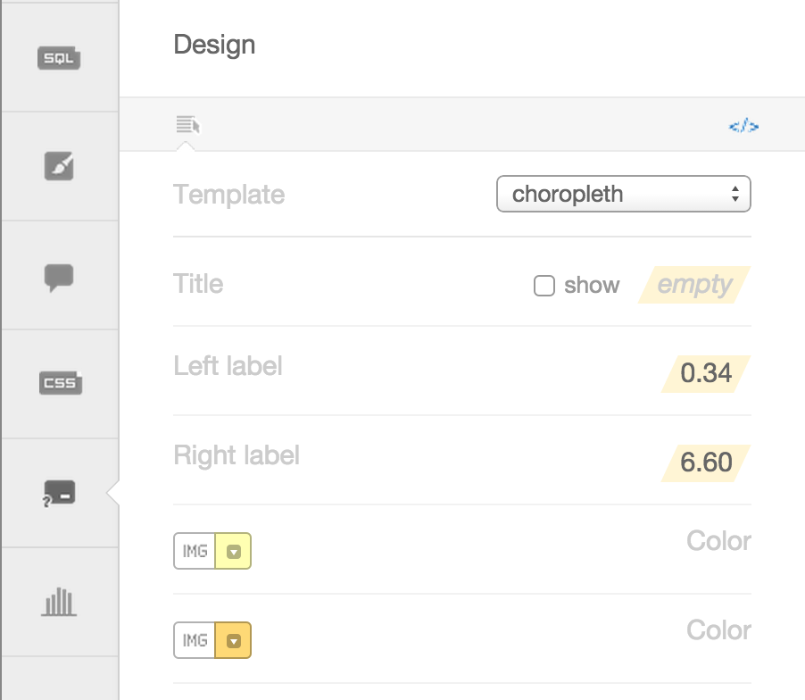
You have the option of giving it a title, and changing the text for the colors. You can also change the colors manually, or, even better, change the color ramp back in the wizard. If you want to explore other color ramps, check out Color Brewer for some very well thought out color schemes.
Torque maps
CartoDB created a fully zoomable map that changes in time.
Some examples
- World Cup tweets saturate this map
- Tweets that mention sunrise map
- Animal migration patterns
Last few things
#### Navigating back to your tables or visualization Click on the 90-degree arrow to get back to view your tables/visualizations 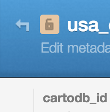
Navigating in general
2. Hands-on Mapping Workshop – 1:30 - 2:15 p.m.
Let’s make maps.
Make sure you already have an account setup: https://cartodb.com/signup?plan=academy
Data Import
Import a new dataset by copying the link (not downloading) and pasting it into the import window in your CartoDB account:
USGS reported seismic activity (earthquakes) http://earthquake.usgs.gov/earthquakes/feed/v1.0/summary/all_month.csv
2.1 Simple Map
Challenge #1
Using the styles in simple, try to recreate the visualization below. It’s similar to an intensity map that shows where earthquakes are occurring in largest numbers.
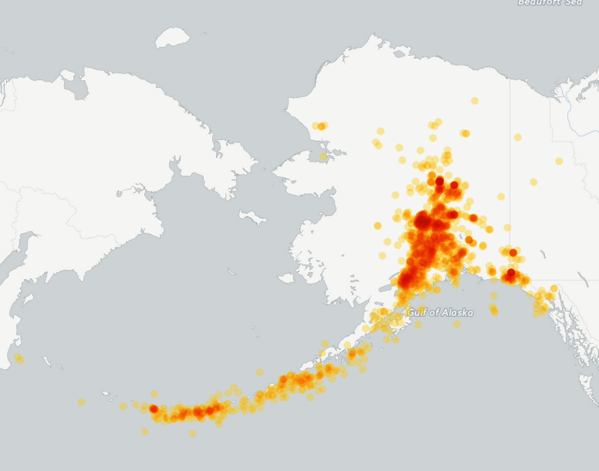
2.2 Choropleth Map
More on quantification here.
Challenge #2
Make a choropleth map
Next select choropleth from the Vizualization wizard. By default it will select depth. Select the mag column (which means magnitude or power of the earthquake).
Notice that there are lots of US-based earthquakes that are fairly weak – so perhaps filtering for earthquakes above 3.0 will give a better visualization of our data.
hint: notice that a filter was used 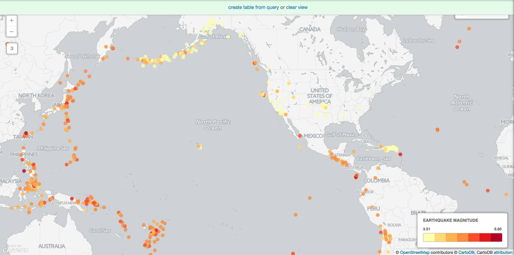
2.3 Category Map
Challenge #3
Try to recreate this map using category. net is the column to categorize by…
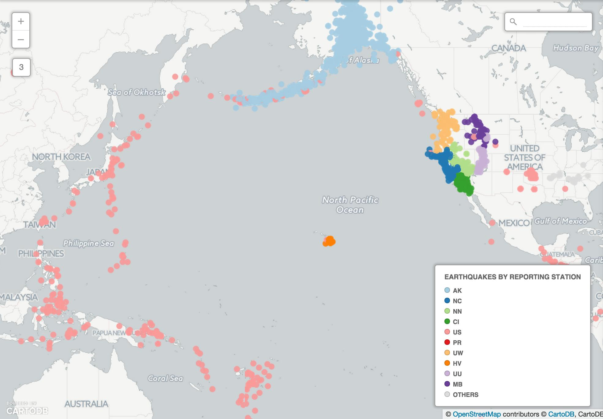
2.4 Multilayer map
Three basic types of data appear on a map.
- Point data – like we saw for the earthquakes
- Line data – like flight paths, can be seen in this example
- Polygon data – like the shapes of states
Challenge #4 – Create a multilayer visualization
Go back to your dashboard and click on Common Data. Find Administrative Regions, then click on USA States.
After the data imports into your account, click on the large + on the panel on the right side of the page.
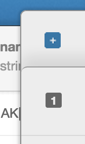
Select the earthquake dataset. It’s default name on import is all_month. Then hit Add layer.
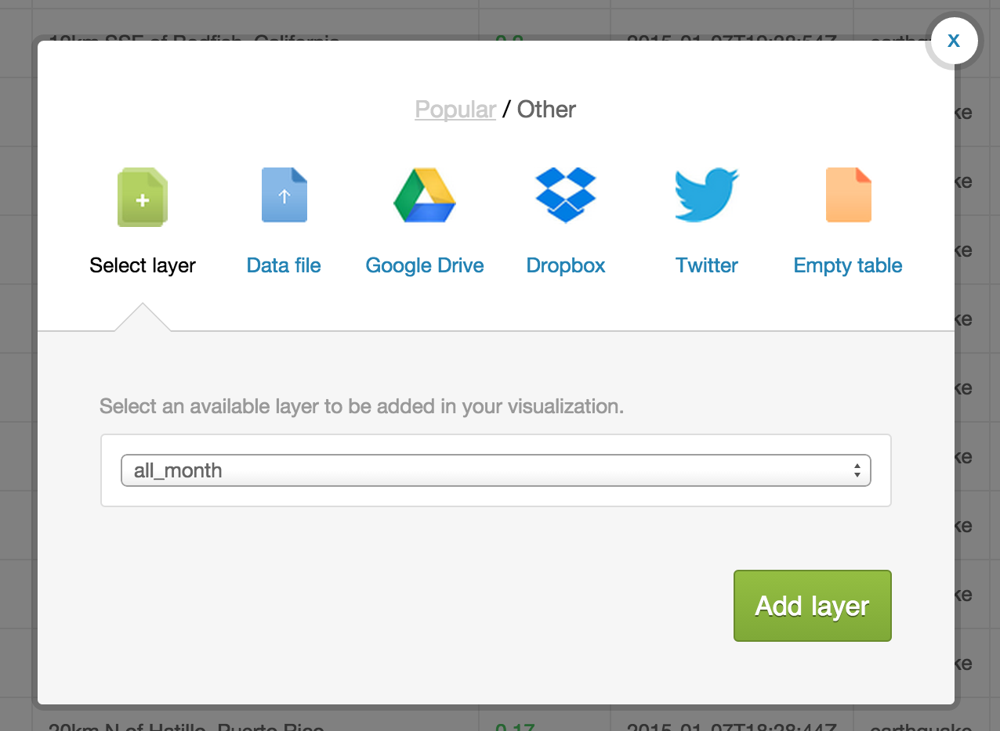
Name your visualization something like “First multilayer visualization.”
You can customize each layer just as you would customize a single layer.
Try to create a map that looks like this:
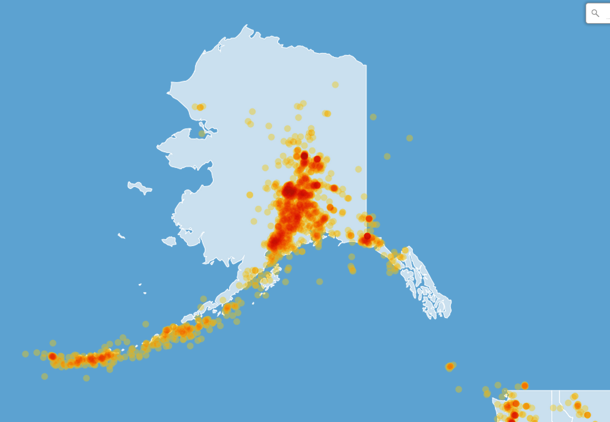
Challenge #5 – Create a basic torque map
Create a torque map and select the time column of the earthquake data
Multilayer example
Multilayer tool developed by The Daily Beast on Abortion Clinic Access.
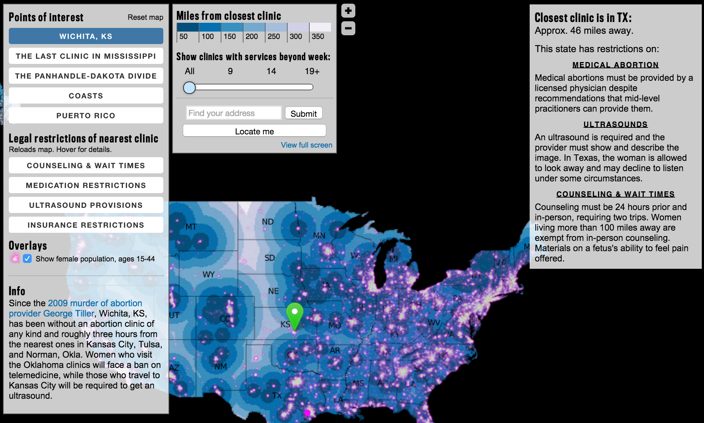
3. Break – 2:15 - 2:25 p.m.
4. Working with Data Workshop – 2:25 - 3:00 p.m.
### Data is messy
- Comes in multiple formats
- Sources uncertain
- Contains errors
- etc.
Recreating the Pop vs. Soda Map
Step 1
- Copy this link: http://popvssoda.com/d3/pvscounty_fips.tsv
- Paste it into the import dialog box as we’ve done before
- Notice the name of this new data table:
pvscounty_fips– we’ll use this in a minute to create a new table from it with new information - Look at
the_geomcolumn to see if it is mappable - Inspect the table to look for information that can be useful to turn it into a map
Step 2
- Go back to your tables view (by clicking on the little arrow in the upper lefthand corner of your browser window)
- import a new table called
usa_countiesinto your account by pasting the following link into the import box:http://andye.cartodb.com/api/v2/sql?q=SELECT%20*%20FROM%20usa_counties&filename=usa_counties&format=csv - Rename the table to
usa_countiesby clicking on table name in the upper left-hand corner of your browser window, like the image below.
Pro tip: this is a call using our SQL API and is a great way to access your data. More at our SQL API page.
Step 3
Copy the following text (which is a SQL statement) and replace the text in the SQL text box.
sql
SELECT
uc.the_geom,
uc.the_geom_webmercator AS the_geom_webmercator,
pf.pctcoke,
pf.pctsoda,
pf.pctpop,
pf.pctother,
pf.name_cou,
pf.name_st
FROM
usa_counties AS uc,
pvscounty_fips AS pf
WHERE
uc.admin_fips = pf.fips_combo
Step 4
Once the query is successful, click on “create table from query” in the green field below the column names.
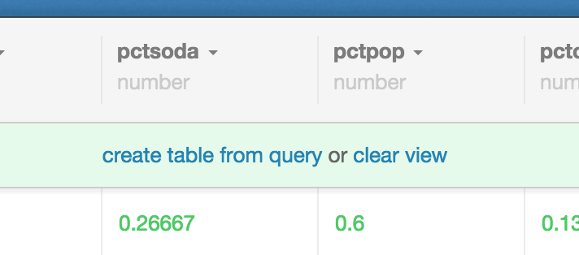
Give a meaningful name, such as popvssoda_data.
Challenge #6
Recreate some of the choropleths shown on http://popvssoda.com/ using the CartoDB editor.
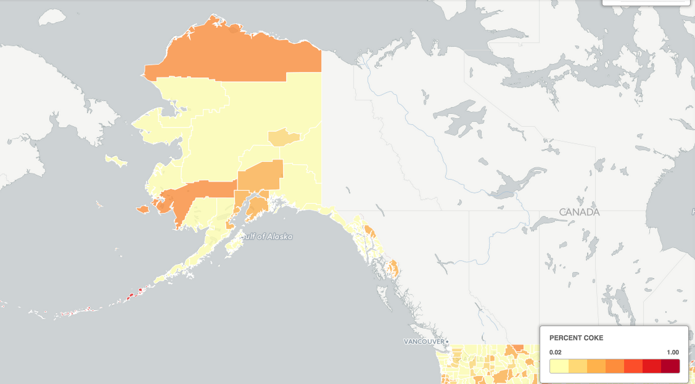
5. Break! (10 minutes) – 3 - 3:10 p.m.
6. CartoDB.js – 3:10 - 3:25 p.m.
CartoDB.js is our JavaScript API – a way to make maps using JavaScript.
6.1 What it looks like
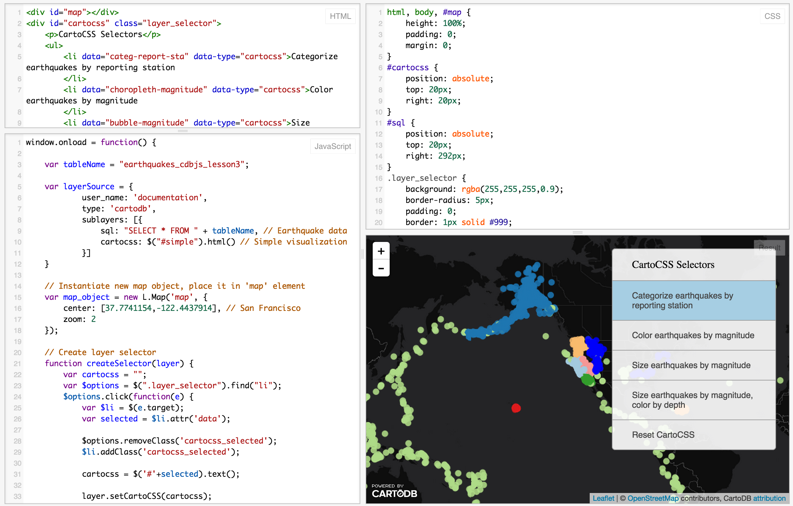
The example above use HTML, CSS, and JavaScript to make a map appear on a webpage.
Check out our Map Academy course on CartoDB.js if you want to learn more.
6.2 Extensibility
Use CartoDB.js with other JavaScript libraries to make powerful web map apps.
Check out Urban Reviewer.
If you take a look at the source code, there are a dozen libraries linked: 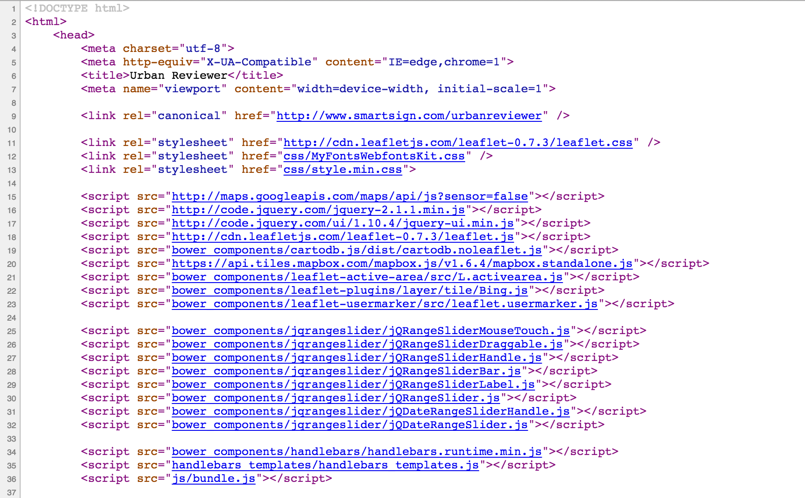
6.3 Epic Example
Illustreets shows standard of living information across England to amazing detail. There are millions of data points, each can be interacted with to give graphs, summaries, etc.
Odyssey – 2:25 - 3 p.m.
### Tell narratives with maps http://cartodb.github.io/odyssey.js/
Examples
- NY Daily News: 48 Hours of Gun Violence
- Cadena Ser (Spanish radio): The Sounds of 11M
- Al Jazeera: Israeli-Palestinian Conflict by Tweets
Getting started!
Go to: http://cartodb.github.io/odyssey.js/sandbox/sandbox.html
Brief tour of the interface.
Replace the header in the box on the right with this:
- baseurl: "http://a.basemaps.cartocdn.com/light_all/{z}/{x}/{y}.png"
- title: "Percent of people that say Coke"
- author: "Your name"
- cartodb_filter: ""
- vizjson: "http://andye.cartodb.com/api/v2/viz/944f113c-95d5-11e4-a3a2-0e4fddd5de28/viz.json"
If you want to add your own vizjson file for another visualization, go to the visualization you want to use in the CartoDB Editor, click on Share in the upper right hand corner, and copy the link under CartoDB.js. You can now paste that link in place of the vizjson link given in the above example.
I’m using a different base map (baseurl), changing the title and author, and adding a data layer by adding the vizjson and cartodb_filter portions.
If you want to add images use the following format:

Example:

Challenge #7
Create a story of the Pop vs. Soda data focused on Percent Coke using Odyssey.js.
7. Wrap Up
More resources
My contact: eschbacher@cartodb.com
If you make a map you’re proud of or just want to say hello, connect with me @MrEPhysics